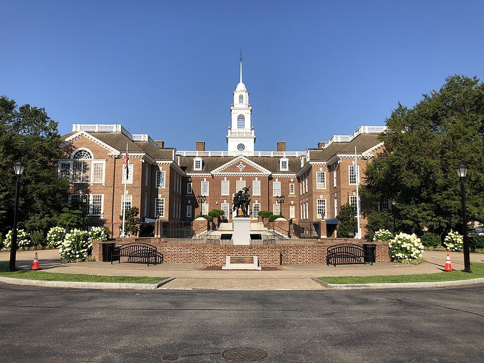

Downtown · B&B
State Street Inn
A B&B on historic State Street, steps from restaurants.
Official details for State Street InnA pilot’s museum, a speedway and a colonial capital.
Dover is a short hop with a big draw for pilots: the free Air Mobility Command Museum, where you can walk through a C-5 Galaxy, C-141 and other airlifters. Add Dover Motor Speedway’s “Monster Mile,” the colonial Green and First State Heritage Park, birding at Bombay Hook and dinner downtown.

Time illustration: direct distance at 150 KTAS plus 15 minutes for departure and arrival, matching the discovery page. Use ForeFlight for your actual flight plan.
Check the weekend weather at both ends → Flight category, your minimums and the crosswind on the best runway.
More in Aviation & getting around below. Crew cars change often: call the FBO before you go. How to have a rental car waiting at the FBO · Know something we missed? Tell us.
33N, Delaware Airpark, is a non-towered field with a 4,200-foot runway in Cheswold, about 15 minutes from downtown Dover.
Delaware Airpark, Cheswold, DE
Dover AFB’s Class D and restricted areas are next door; brief carefully. Confirm fuel and a car. No live fuel price is shown.
Mid-Atlantic coastal weather: summer haze and afternoon thunderstorms, sea fog in spring, and busy airspace near Philadelphia, Baltimore and Dover AFB. About 370 nm from Myrtle Beach.
Rates and availability need travel dates. NASCAR race weekends fill every room.
A B&B on historic State Street, steps from restaurants.
Official details for State Street InnA resort hotel by the speedway.
Bally’s for Bally’s Dover Casino ResortPrices and availability for your dates, through our partner Stay22. This is an affiliate link: we may earn a commission at no cost to you. The picks above are never paid.
Reserve weekend dinners.
A downtown restaurant on South State Street.
Official details for Grey Fox GrilleStart with the museum.
This prototype links to the local visitor site. It does not yet match events to your travel dates.
Race weekends at the Monster Mile; book early.
Speedway for NASCAR weekendsShorebirds and waterfowl at Bombay Hook.
Refuge for Bird migrationCheck AMC Museum hours.
AMC Museum for Museum open daysCheck the local calendar when choosing a weekend, and confirm dates and tickets with the organizer.
A sample weekend: airlifters, history and birds. No bookings or availability confirmed.
Land at 33N mid-morning.
The Air Mobility Command Museum.
First State Heritage Park, then back to the airport.
Land at 33N, subject to weather, your fuel stop and your actual flight plan.
The Air Mobility Command Museum.
Dinner at Grey Fox Grille.
First State Heritage Park.
Bombay Hook.
Dinner downtown.
The speedway or a walk on the Green.
Allow time at the airport.
Summer thunderstorms build in the afternoon; leave early.
Bombay Hook at dawn.
The speedway.
Dinner at Grey Fox Grille.
These details make the difference between an appealing list and a usable getaway.
Lodging first, especially on race weekends.
About 370 nm: an easy nonstop.
Dover AFB Class D and restricted areas are next door.
April to October.
Picks and links reviewed by WingAway Weekends. Hours, prices, menus and availability change often, so confirm directly with each place before booking. Spotted something out of date, or have a favorite we missed? Email us at hello@wingawayweekends.com.
WingAway Weekends helps you discover the destination. Use ForeFlight and current official aviation information for route, performance, weather, NOTAMs and preflight decisions. Flight planning and PIC responsibility stay with the pilot.